Test Project: Assemble
Test project: 0. Initialize 1. Assemble 2. Annotate 3. Export
The Assemble module cleans the reads, builds mitogenome assemblies, maps the reads to the assembly to calculate coverage, and BLASTs each assembly against a database of metazoan mitogenomes to find its closest published relative.
Set the options
Every processing step has an options set, shown as a link in the sample table. Click the default link in the Preprocess Opts. column to see how the reads will be cleaned.
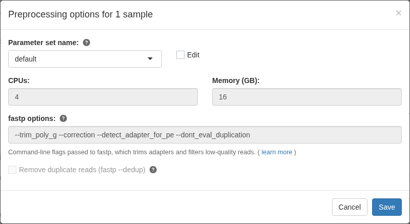
Duplicate reads are kept by default. To remove them, tick Remove duplicate reads in the Preprocess options (it runs fastp with --dedup). In the test data it dropped about a fifth of the reads and changed almost no calls, so treat it as a depth and runtime control rather than an accuracy fix.
The Assembly Opts. column works the same way, and controls the assembler.
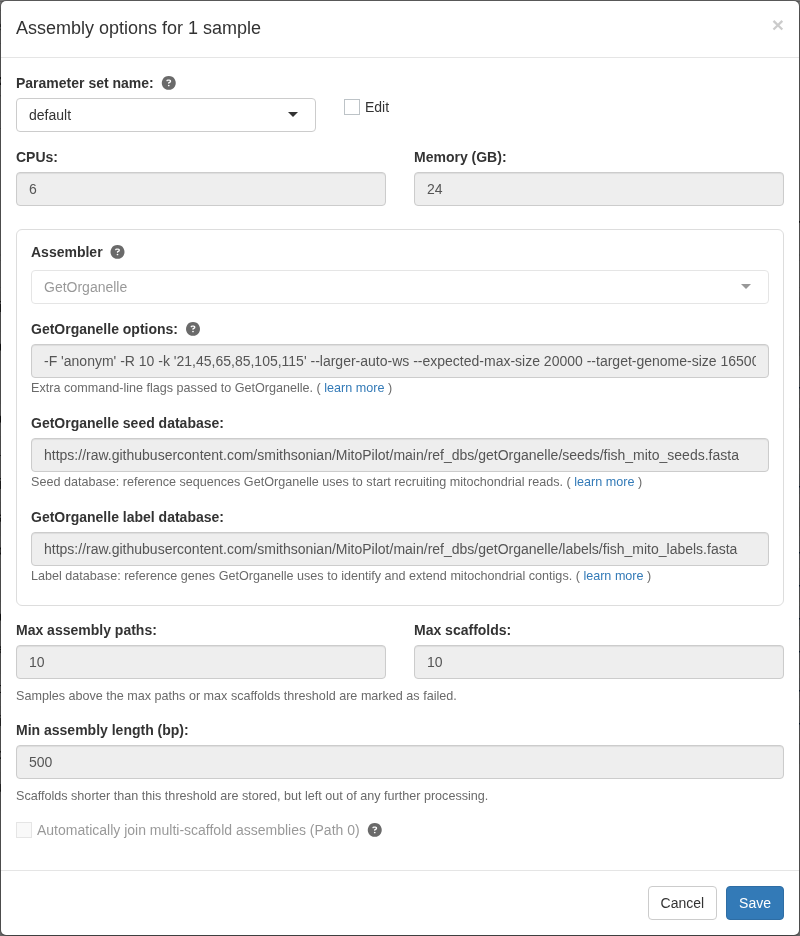
Nothing is editable until you tick Edit. The important controls:
- CPUs and Memory per sample. Raise memory if samples fail with out-of-memory errors.
- Assembler. GetOrganelle by default, MitoFinder, or MapToRef. GetOrganelle only assembles reads it recognizes as mitochondrial, which makes it fast but dependent on good reference databases. MitoFinder assembles everything, which is much slower but can work better for groups with few reference mitogenomes. MapToRef maps your reads to a reference mitogenome you supply and calls the consensus from the reads. See choosing an assembly method for a comparison.
- GetOrganelle seed and label databases. The reference sequences GetOrganelle uses to recruit and extend mitochondrial reads. The defaults are fish; for other groups, build your own with
custom_assembly_db()(see custom databases). - MitoFinder database. Only used when the assembler is MitoFinder. A GenBank-format (
.gb) file of one or more reference mitogenomes that MitoFinder uses to identify mitochondrial contigs. The default is the zebrafish mitogenome (NC_002333.2), so for anything other than a fish, supply a reference from your own group.custom_assembly_db()can build this file too. - Max assembly paths / Max scaffolds. Samples are marked failed instead of continuing in the pipeline if they exceed these thresholds.
- Automatically join multi-scaffold assemblies (Path 0). Off by default, and worth leaving off until you understand your data. See handling difficult assemblies.
Options are saved as named, reusable sets. To make one, tick Edit, change what you want, type a new name in the Parameter set name box, and click Save. That name now appears in the dropdown for any sample. Different samples can use different parameter sets, which can allow you to selectively tweak memory usage, assembly method, etc. for difficult samples.
If several rows are selected when you open an options window, your changes apply to all of them; selecting any locked sample blocks the change. Editing an existing set in place, rather than saving under a new name, affects every sample using that set, so MitoPilot warns you when that reaches beyond the rows you selected.
For the test project the defaults are fine.
HYDRA Raise the memory defaults before running. The package defaults are tuned for a laptop and are too low for Hydra’s queues. For the test project, edit the options sets and use:
- Preprocess Opts. memory 40 GB
- Assembly Opts. memory 80 GB
Tick Edit, change the memory, give the set a name such as hydra, and click Save so it applies to every selected sample.
HYDRA CPUs and memory are per-job request. On Hydra these values become the job scheduler’s resource request. The Hydra config flags high-memory steps automatically when a request crosses the per-CPU threshold. See the Hydra wiki for details about the available compute nodes.
Run the workflow
Click Update at the top of the window. MitoPilot shows the Nextflow command it is about to run and how many samples it applies to.
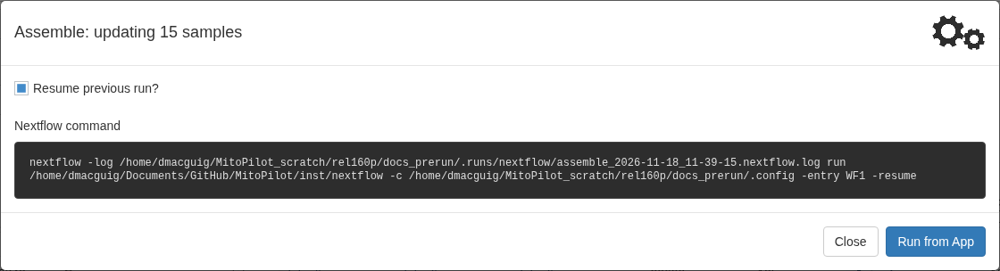
Run from App runs the pipeline in your R session (distributing individual tasks to compute nodes if you are working on a HPC cluster). The Progress section of the same window updates as samples move through the steps, and the spinning gears in the corner mean work is still happening. This is the simplest option, and the right one for a project this size.
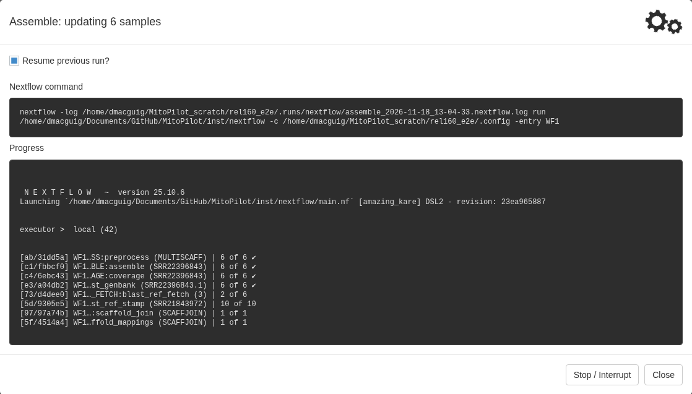
Each line is a pipeline step, with a count of how many samples have finished it. Stop / Interrupt halts the run; you can resume it later without redoing completed work.
You can also copy the Nextflow command shown in the update window and run it in a terminal from the project directory. That is the way to add extra Nextflow command line options or override input parameters, and it is what you paste into a job submission script on a cluster.
Warning. Running from the app ties the pipeline to the app session. Closing the MitoPilot app will kill the pipeline. For large projects, or anything on a cluster, save or submit a job script instead so the run survives a dropped connection. See HPC cluster support.
HYDRA Submit as Job. MitoPilot detects Hydra and adds a Submit as Job button next to Run from App. It submits the workflow to the cluster for you, so the run keeps going after you close the app or lose your connection. Monitor it by running qstat in a terminal (the Terminal tab in RStudio Server works) and reading the log files in the project’s .logs directory. Reopen the app when the job finishes. For anything beyond a dozen samples, use Submit as Job rather than running from the app.
Assemble runs three steps per sample: read pre-processing with fastp, assembly with GetOrganelle, MitoFinder, or MapToRef, and read mapping with bowtie2 to compute depth and error rates. It then BLASTs each assembly to find its closest published relative, and fetches that reference’s annotations from NCBI. Nextflow runs all samples in parallel through these steps.
Failures are normal and often mean a sample ran out of memory. Common error messages are covered in the troubleshooting articles.
Finding the reference: local vs remote BLAST
The reference search runs against a local database of metazoan mitogenomes bundled with the MitoPilot Docker/Singularity container. This is the default, and for most projects it is all you need.
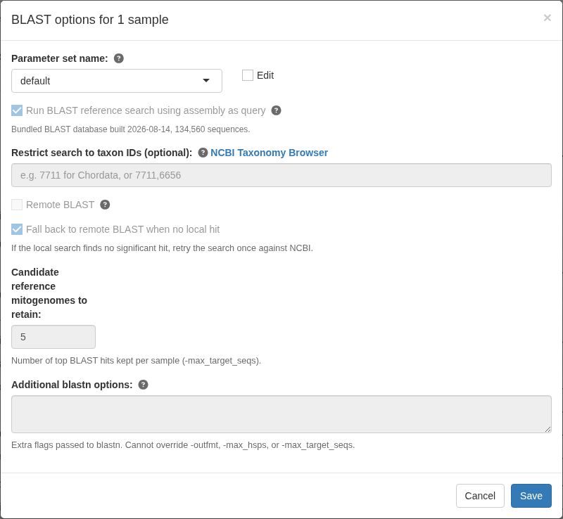
The BLAST Opts. window reports the build date and size of the bundled database, recorded the first time a local search runs in a project. Two settings change the behavior:
- Remote BLAST searches NCBI over the network instead of the local database. It is much slower (sometimes hours per search) and rate limited. Only worth using to reach sequences not contained in the BLAST database included with the MitoPilot container.
- Fall back to remote BLAST when no local hit is on by default. If the local search comes up empty, MitoPilot retries that sample once against NCBI.
You can restrict either search with Restrict search to taxon IDs (numeric IDs, not names). The Entrez query box appears only once Remote BLAST is ticked.
Note. Local BLAST does not remove the need for an NCBI API key. Only the search is local. Once a reference is chosen, MitoPilot still goes to NCBI for that record’s sequence, annotations, and taxonomic lineage, all of which feed into curation and export. For projects with more than a handful of samples, set ncbi_api_key at project setup so those requests are not throttled.
Read the results
When the run finishes, the sample table should automatically fill in. If not try clicking the refresh button in the toolbar.
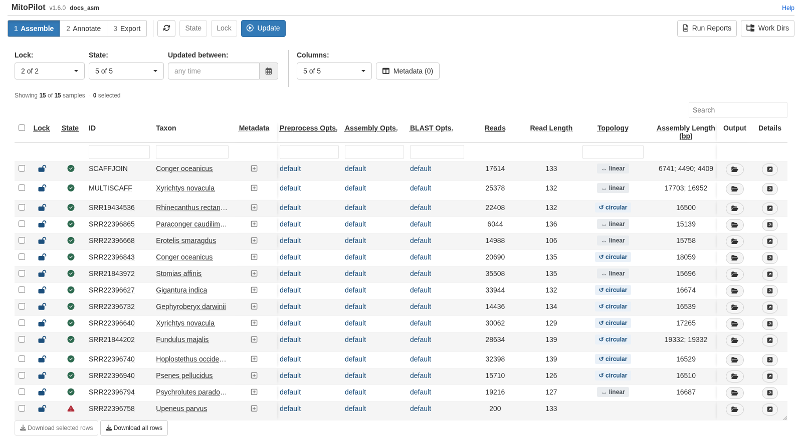
Useful columns: Reads surviving pre-processing, Topology (circular or linear), Assembly Length (bp), and # Paths / # Scaffolds, which tell you whether the sample came back as one clean sequence or something messier. The BLAST columns name the closest GenBank record. The Output button opens the sample’s results folder.
The Details button opens a new window for the assembly.
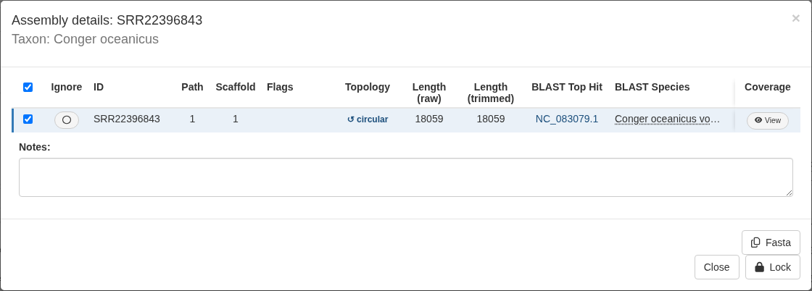
For a sample that assembled cleanly there is one row here. Samples that produced more than one assembly get more rows and more tools, covered below.
Select the row and use the Fasta button to copy the sequence to your clipboard.
Coverage and error
In this assembly details window, the View button in the Coverage column opens a plot of read depth, error rate, and GC content along the assembly.

This is SRR21843972 (Stomias affinis). Depth collapses at both ends, which is why the assembly came back linear rather than circular: there were not enough reads spanning that region to close the circle. To assemble a circular mitogenome, we could try different GetOrganelle settings or using MitoFinder for assembly.
Note that GenBank will still accept and verify partial (linear) mitogenomes. A linear mitogenome is not a failure and can still be annotated.
HYDRA Buttons that open files. On RStudio Server, the Output button opens that sample’s results folder in the Files pane at the bottom right of your RStudio session, and the coverage View plot opens the PDF the same way. If you reached the app through an SSH tunnel from a container instead, these buttons cannot open anything on your laptop, so the app shows the file path in a message instead.
Detailed troubleshooting
Work Dirs at the top right opens a browser of the working directories for every step of the pipeline, including failed attempts. It is the most reliable way to reach logs and intermediate files when something goes wrong.
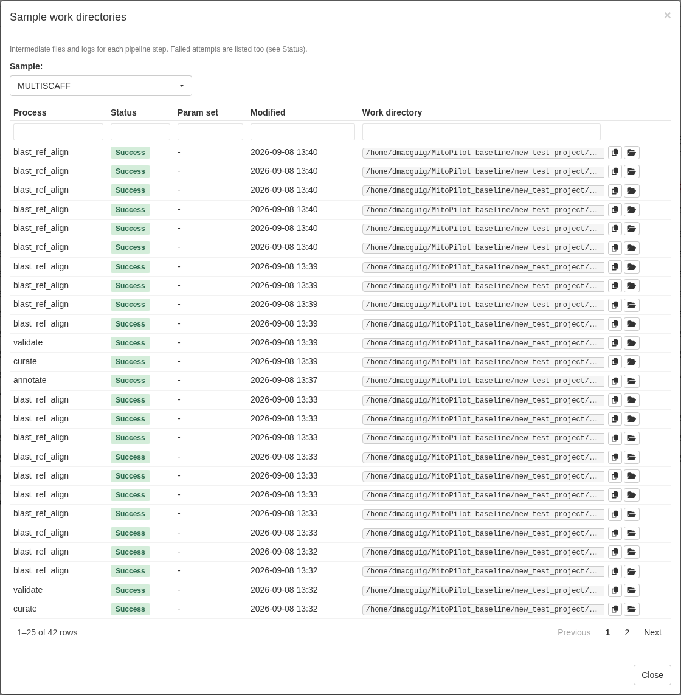
Problematic samples
Three test samples are deliberately problematic, and between them they cover most of what goes wrong with real data.
Not enough data
SRR22396758 (Upeneus parvus) carries a warning icon and the note “Insufficient sequencing depth”. Its read files were intentionally truncated to 200 reads. This sample fails to meet the default min_depth argument at project setup. There is nothing to fix here, so leave this sample behind when you lock the rest.
Two competing assemblies
SRR21844202 (Fundulus majalis) is flagged “Unable to resolve single assembly from reads”: GetOrganelle found two valid paths through a tangled assembly graph. Open Details and you see both, each 19,332 bp.
Select both and click Align.
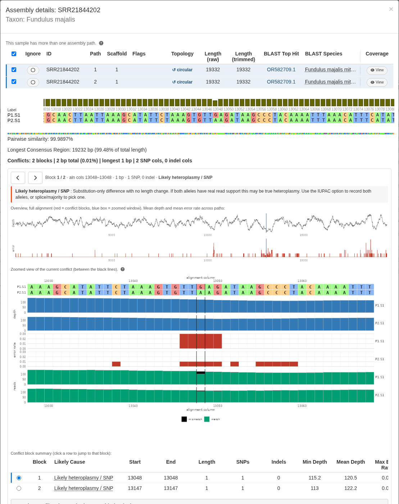
The paths are 99.99% identical, disagreeing at two single-base positions. MitoPilot classifies each conflict, here “Likely heteroplasmy / SNP”, and shows read depth and error rate around it so you can see whether both alleles have real support.
From here you can:
- Ignore the extras. Click the ignore button on the paths you do not want. Only what remains goes to annotation. This is what we do for the test project.
- Build a resolved assembly. Choose how to handle each conflict block and MitoPilot writes a single reconciled sequence as Path 0, superseding the alternatives.
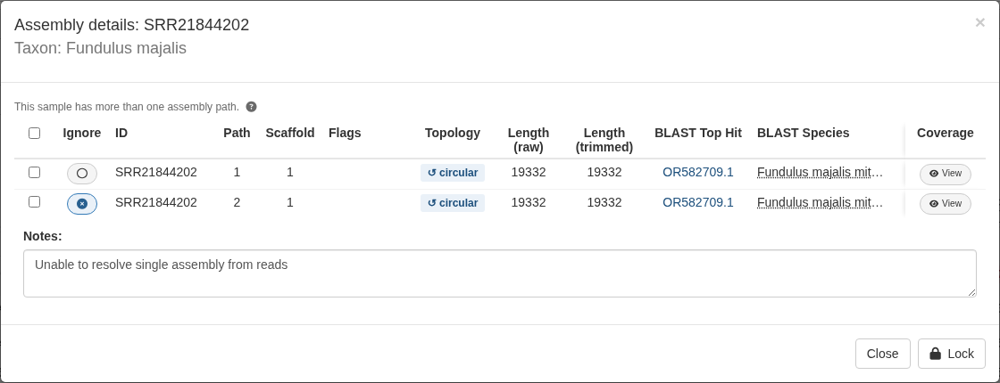
Note. Resolving discrepancies with IUPAC ambiguity codes provided as an option. But be aware that annotation may handle ambiguous bases poorly if they occur in a protein-coding region.
Fragmented assemblies
Two samples come back in pieces, but they need different treatment.
SCAFFJOIN (Conger oceanicus) is one mitogenome broken into three scaffolds. Open its details and MitoPilot shows the scaffold join editor.
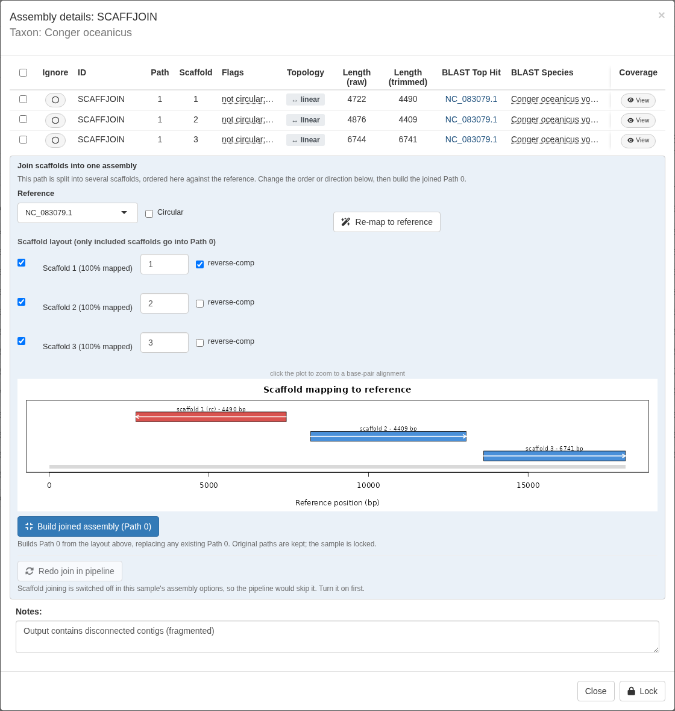
All three scaffolds map to the same reference (NC_083079.1) at 100% coverage, and the plot shows their mapping positions against the reference. That is the signature of a mitogenome that the assembler could not connect into a single contig. You can override the order or orientation, tick Circular if appropriate, and then click Build joined assembly (Path 0).
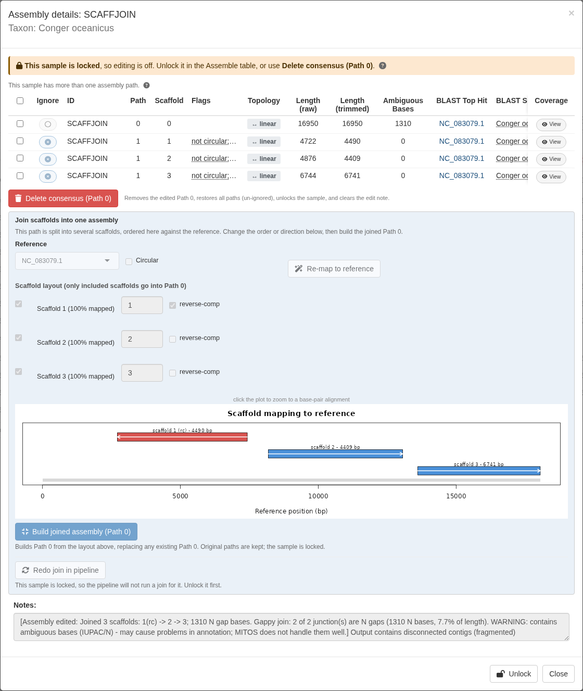
The joined Path 0 is 16,950 bp, the three original scaffolds are marked ignored, and the sample is locked automatically. The note records how it was built, including how many N bases fill the gaps. Those Ns are real missing sequence, and MitoPilot warns you about them because MITOS2 does not handle ambiguous bases well.
MULTISCAFF looks superficially similar, two scaffolds in one path, but it is the opposite case.
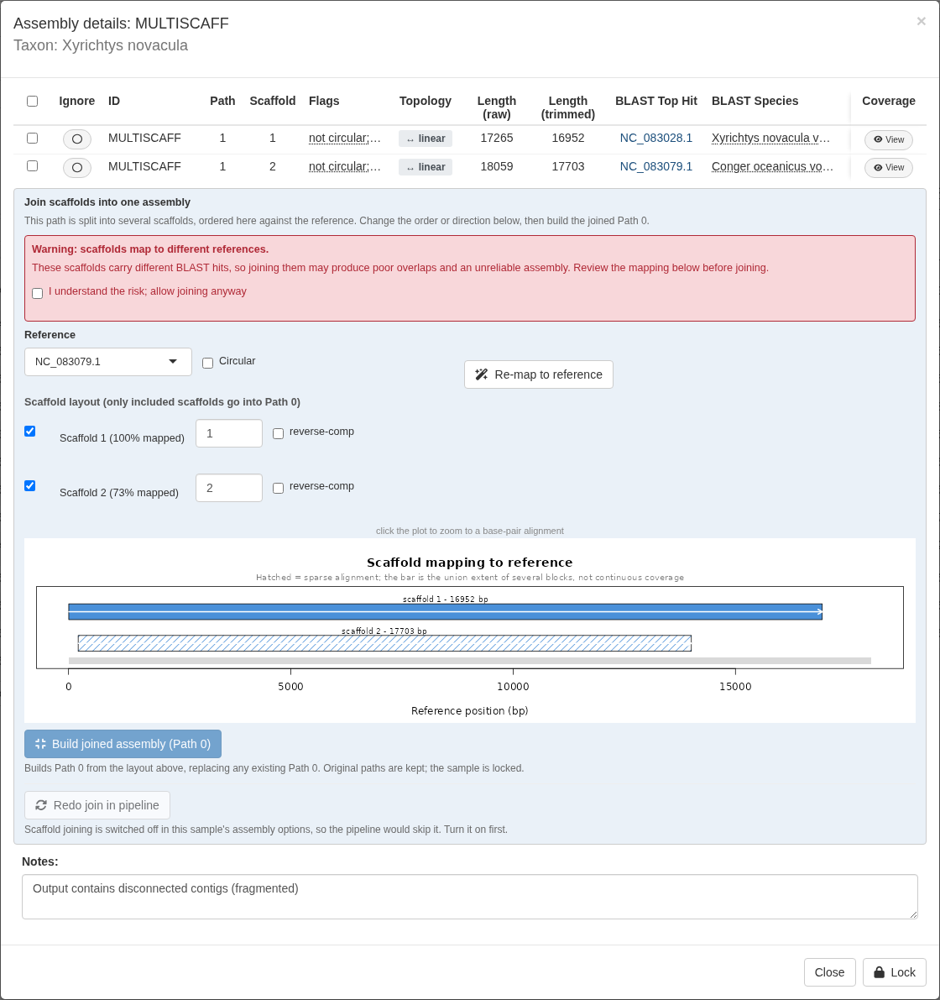
These scaffolds carry different BLAST hits, and the mapping plot shows the second one only sparsely aligned (hatched shading) to the reference. This likely represents contamination or a mixed sample. Joining them would fabricate a chimeric mitogenome. Leave them separate, and each is annotated, validated, and exported as its own record.
Tip. Fragmented does not automatically mean joinable. Check that the pieces map to the same reference in a sensible order before you join anything. Contamination, NUMTs, and naturally multipartite mitogenomes all look like “extra scaffolds” at first glance.
Lock and move on
Select every sample that assembled successfully, which is all of them except SRR22396758, and click Lock.
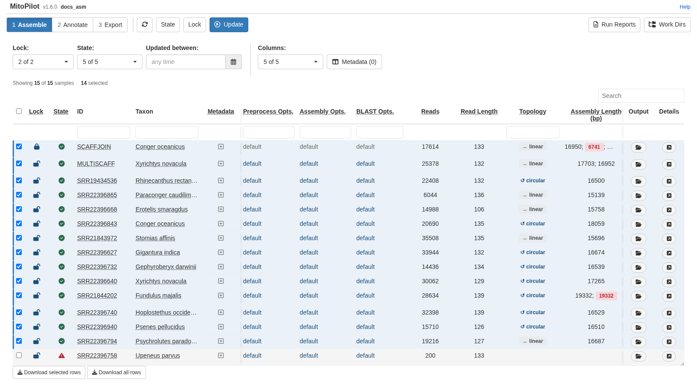
Locking freezes those samples in Assemble and releases them to the Annotate module. Switch modules with the numbered buttons at the top left.